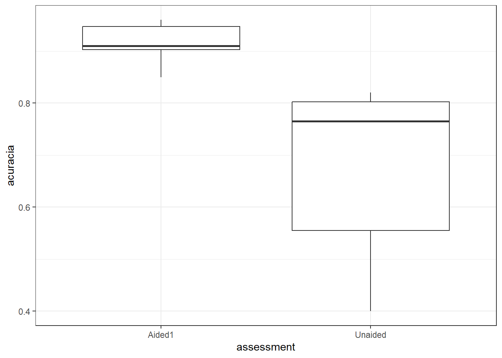
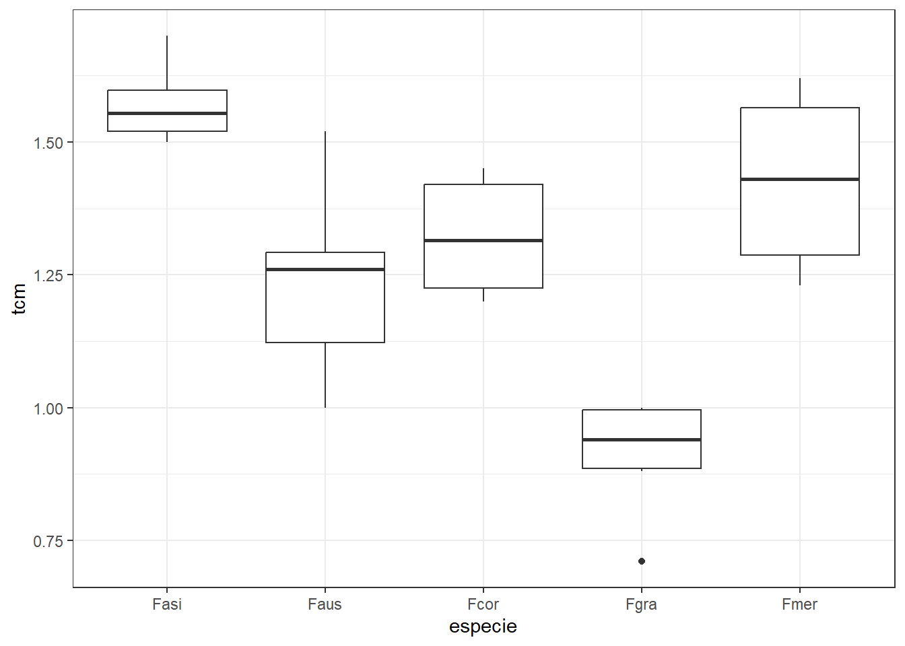

library(gsheet)
mg = gsheet2tbl("https://docs.google.com/spreadsheets/d/1bq2N19DcZdtax2fQW9OHSGMR0X2__Z9T/edit#gid=983033137")Análise Estatística: Estatística inferencial
Estatística Inferencial : Testes de média
Importando os dados
Iniciaremos este tópico importando o dataset que iremos trabalhar.
O pacote gsheet permite importar dados diretamente de uma planilha do Google Sheets. A função gsheet2tbl converte a planilha em um tibble (um tipo de data frame otimizado).
Caso haja dúvidas, existe um tópico específico tratando da importação dos dados neste site.
Visualização dos dados
Boxplot
Um boxplot, também conhecido como diagrama de caixa, é uma representação gráfica que resume a distribuição de um conjunto de dados baseado em cinco estatísticas: mínimo, primeiro quartil (Q1), mediana (Q2), terceiro quartil (Q3) e máximo e também pode destacar outliers.
O pacote tidyverse engloba diversos pacotes, como o ggplot2 que é uma das bibliotecas mais populares para visualização de dados em R. Com esta biblioteca podemos utilizar a função geom_boxplot que cria um boxplot. Podemos aplicar temas aplicando um tema preto e branco ao gráfico, melhorando a clareza visual com a função theme_bw().
Um exemplo de boxplot pode ser plotado utilizando os dados já carregados acima:
library(tidyverse)── Attaching core tidyverse packages ──────────────────────── tidyverse 2.0.0 ──
✔ dplyr 1.1.4 ✔ readr 2.1.5
✔ forcats 1.0.0 ✔ stringr 1.5.1
✔ ggplot2 3.5.1 ✔ tibble 3.2.1
✔ lubridate 1.9.3 ✔ tidyr 1.3.1
✔ purrr 1.0.2
── Conflicts ────────────────────────────────────────── tidyverse_conflicts() ──
✖ dplyr::filter() masks stats::filter()
✖ dplyr::lag() masks stats::lag()
ℹ Use the conflicted package (<http://conflicted.r-lib.org/>) to force all conflicts to become errorsmg |>
ggplot(aes(trat, comp))+
geom_boxplot()+
theme_bw()
O boxplot é útil para visualizar a distribuição dos dados, incluindo a mediana, os quartis e possíveis outliers. O boxplot ainda pode ajuda a identificar a dispersão dos dados e a presença de possíveis valores atípicos. Além disso podemos identificar a diferença entre dois tratamentos usando um boxplot, começando pela observação a linha mediana dentro de cada caixa, que representa o valor central dos dados.
Como as medianas estão em diferentes níveis, isso sugere que as medianas dos tratamentos são diferentes. Em seguida, examinamos a posição e a extensão das caixas (intervalo interquartil, IQR), e como as caixas dos dois tratamentos não se sobrepõem, as distribuições dos tratamentos são similares. Menos sobreposição indica uma maior probabilidade de diferença significativa entre os tratamentos.
Teste t - Dados Independentes
O Teste t é utilizado para comparar as médias de duas amostras, enquanto o Teste F, que veremos mais abaixo, seria para três ou mais. Ele verifica se a diferença entre as médias é estatisticamente significativa, ou seja, se é provável que as diferenças observadas se devam ao acaso.
Preparação dos Dados
No nosso exemplo, precisamos separar os dados para isso devemos passar do formato longo para o formato largo. A função pivot_wider transforma os dados de formato longo para formato largo. No formato longo, cada linha é uma observação única, enquanto no formato largo, cada linha representa um grupo de observações.
mg2 <- mg |>
pivot_wider(names_from = trat, values_from = comp)Realizando o Teste t
A função t.test(),como o próprio nomde diz, realiza o teste t, que compara as médias de duas amostras para determinar se elas são estatisticamente diferentes. Um p-valor baixo (geralmente < 0,05) indica que as médias são significativamente diferentes.
# Teste t
teste1 <- t.test(mg2$Mg2, mg2$control)
teste1
Welch Two Sample t-test
data: mg2$Mg2 and mg2$control
t = -8.1549, df = 17.354, p-value = 2.423e-07
alternative hypothesis: true difference in means is not equal to 0
95 percent confidence interval:
-6.490393 -3.825607
sample estimates:
mean of x mean of y
10.520 15.678 Hipótese Nula (H0) e Hipótese Alternativa (H1)
A hipótese H0, também conhecida como hipótese nula, é uma afirmação inicial que presume que não há efeito ou diferença significativa em um estudo ou experimento. É uma posição de “inocência” até que evidências suficientes provem o contrário. Na prática estatística, a hipótese nula é formulada para ser testada e possivelmente rejeitada em favor de uma hipótese alternativa (H1), que sugere a existência de um efeito ou diferença.
No caso do exemplo acima, nossa hiótese é de que as médias dos tratamentos não diferem entre si. Como o p-valor ou p-value foi menor do que 0,05, rejeitamos nossa hipótese nula (H0) e aceitamos a hípotese alternativa (H1), que no caso as médias dos tratamentos diferem entre si.
Teste de Normalidade
A função shapiro.test(), testa a hipótese de que os dados vêm de uma distribuição normal. A normalidade dos dados é um pressuposto importante para a validade do teste t.
shapiro.test(mg2$control)
Shapiro-Wilk normality test
data: mg2$control
W = 0.93886, p-value = 0.5404shapiro.test(mg2$Mg2)
Shapiro-Wilk normality test
data: mg2$Mg2
W = 0.97269, p-value = 0.9146Um p-valor alto indica que os dados são normalmente distribuídos, como ocorre no caso acima.
Histograma
A função hist() é utilizada para criar um histograma, que mostra a distribuição dos dados. É útil para visualizar a forma da distribuição e identificar se ela é aproximadamente normal.
# Histograma
hist(mg2$control)
hist(mg2$Mg2)
O histograma do tratamento controle segue nitidamente uma distribuição Gaussiana, enquanto a distribuição do tratamento Mg2 não segue uma distribuição normal.
Teste de Homogeneidade de Variância
A função var.test() realiza a comparação das variâncias de duas amostras para verificar se são homogeneamente distribuídas. A homogeneidade de variância é outro pressuposto importante para os testes estatísticos.
#Teste de homogêneidade de variância
var.test(mg2$control, mg2$Mg2) #Se a variância não for homogênea tem que informar, var.equal = FALSE
F test to compare two variances
data: mg2$control and mg2$Mg2
F = 0.67654, num df = 9, denom df = 9, p-value = 0.5698
alternative hypothesis: true ratio of variances is not equal to 1
95 percent confidence interval:
0.1680428 2.7237436
sample estimates:
ratio of variances
0.6765394 Um p-valor alto indica que as variâncias são homogêneas, como ocorre no exemplo acima (p-value = 0.5698).
QQ Plot
A função qqplot() é uma ferramenta valiosa para comparar distribuições de dados. Ela é amplamente usada para verificar a normalidade de uma amostra e para comparar distribuições de viariância de duas amostras diferentes. A interpretação do QQ plot é baseada no quão bem os pontos seguem uma linha reta, com desvios significativos indicando diferenças entre as distribuições.
qqplot(mg2$control, mg2$Mg2)Relatório
O reaport() gera um relatório detalhado dos resultados do teste t pareado.
library(report)Warning: pacote 'report' foi compilado no R versão 4.4.1report(teste1)Warning: Function `format_text()` is deprecated and will be removed in a future
release. Please use `text_format()` instead.Effect sizes were labelled following Cohen's (1988) recommendations.
The Welch Two Sample t-test testing the difference between mg2$Mg2 and
mg2$control (mean of x = 10.52, mean of y = 15.68) suggests that the effect is
negative, statistically significant, and large (difference = -5.16, 95% CI
[-6.49, -3.83], t(17.35) = -8.15, p < .001; Cohen's d = -3.65, 95% CI [-5.12,
-2.14])Utilizamos o teste t para sabermos se há diferença entre as médias, o p-valor foi <0,05, porém temos que calcular se as médias possuem normalidade, para saber se podemos confiar no teste t. Segundo o teste de shapiro-wilk os dados seguem normalidade (não rejeita Ho), quando plotamos o histograma dos dados podemos observar que segue uma distribuição normal.
Outra observação que devemos fazer é se as variáveis são homogênas usando o teste F. E neste caso as variâncias são homogêneas (não rejeita Ho) e o boxplot já dava esses indicativos visuais. Podemos fazer também o grafico QQ Plot para mostras a variância dos dados, como foi realizado acima.
Teste t - Dados Dependentes
Para dados dependentes, realiza-se um teste t pareado. Esse teste é usado quando as amostras são dependentes, como medições antes e depois do tratamento no mesmo grupo de indivíduos. Para fazer o teste t pareado tem que colocar o argumento paired = TRUE no código.
Importação e Visualização
Inicialmente devemos importar e visualizar os dados, lembrando que gsheet() importa dados do Google Sheets e ggplot2 e geom_boxplot() cria um boxplot para visualização.
library(gsheet)
escala = gsheet2tbl("https://docs.google.com/spreadsheets/d/1bq2N19DcZdtax2fQW9OHSGMR0X2__Z9T/edit?gid=1729131173")
escala |>
ggplot(aes(assessment, acuracia))+
geom_boxplot()+
theme_bw()
O boxplot, nos indica que há diferença entre os tratamentos, caso haja dúvidas sobre a interpretação há um tópico acima sobre a interpretação do boxplot.
Preparação dos Dados
Antes de realizarmos os testes é necessário preparar os dados, selecionando as colunas específicas através da função select(). Além disso devemos transformar os dados de formato longo para formato largo pela função pivot_wider().
escala2 <- escala |>
select(assessment, rater, acuracia) |>
pivot_wider(names_from = assessment,
values_from = acuracia)Realizando o Teste t Pareado
Para o teste t pareado, temos que lembrar de colocar o argumento paried = TRUE, que por default ele vem como FALSE, este argumento indica que as amostras são pareadas. Assim, a função t.test(paired = TRUE) realiza um teste t pareado, que é usado quando as amostras são dependentes.
#Tete t pareado
teste2 <- t.test(escala2$Aided1, escala2$Unaided, paried = TRUE, var.equal = FALSE)
#Obs.: Os dados foram alterados para dar não paramétrico.
teste2
Welch Two Sample t-test
data: escala2$Aided1 and escala2$Unaided
t = 4.4134, df = 9.8561, p-value = 0.001354
alternative hypothesis: true difference in means is not equal to 0
95 percent confidence interval:
0.1161235 0.3538765
sample estimates:
mean of x mean of y
0.917 0.682 Os dados foram alterados para que pudessemos fazer uma análise não paramétrica. Portanto, pelo teste de homogeneidade, os dados não possuem homogêneidade de variância e assim temos que colocar var.equal = FALSE. A função var.equal = FALSE indica que as variâncias das duas amostras não são iguais, ajustando o cálculo do teste t para essa condição.
O p-valor pelo teste t pareado é igaual a 0.001354, logo. com o p-valor < 0.05, rejeitase H0 a 5% de probabiliade pelo teste t pareado.
Teste de Normalidade
Usamos a função shapiro.test(), que testa a normalidade dos dados em cada grupo. Para mais detalhes sobre normalidade, veja nos tópicos acima.
#Teste de normalidade
shapiro.test(escala2$Unaided)
Shapiro-Wilk normality test
data: escala2$Unaided
W = 0.7748, p-value = 0.007155shapiro.test(escala2$Aided1)
Shapiro-Wilk normality test
data: escala2$Aided1
W = 0.92852, p-value = 0.4335Segundo o teste de normalidade de Shapiro-Wilk, a variável Unaided não segue uma distribuição normal (p-valor < 0.05), enquanto a variável Aided1 apresentou normalidade (p-valor > 0.05).
Histograma
A função hist() cria histogramas para visualizar a distribuição dos dados.
#Histograma
hist(escala2$Unaided)
hist(escala2$Aided1)
Observando os plots dos histogramas, ambas as variáveis Unaided e Aided, não possuem uma distribuição normal. Apesar da variável Aided1 ter apresentado normalidade (p-valor > 0.05) pelo teste de Shapiro-Wilk. Em experimentos, costuma-se considerar os testes em detrimento dos gráficos.
Teste de Homogeneidade de Variância
A função var.test() compara as variâncias dos dois grupos.
#Teste de homogêneidade de variância
var.test(escala2$Unaided, escala2$Aided1) #Se a variância não for homogênea tem que informar, var.equal = FALSE
F test to compare two variances
data: escala2$Unaided and escala2$Aided1
F = 20.978, num df = 9, denom df = 9, p-value = 0.000106
alternative hypothesis: true ratio of variances is not equal to 1
95 percent confidence interval:
5.210754 84.459185
sample estimates:
ratio of variances
20.97847 #qqplot(escala2$control, escala2$Aided1)Para o nosso exemplo, utilizamos o teste F para comparação de duas variâncias, que apresentou um p-valor < 0.05, ou seja, rejeita-se H0 e aceita-se H1, as variâncias não apresentam homogeneidade pelo teste F a 5% de probabilidade.
Relatório
Como já mencionado, o R possui o pacote report, que por sua vez possui a função report(), que faz um sumário do teste armazenado em um objeto. No nosso exemplo:
report(teste2)Warning: Function `format_text()` is deprecated and will be removed in a future
release. Please use `text_format()` instead.Effect sizes were labelled following Cohen's (1988) recommendations.
The Welch Two Sample t-test testing the difference between escala2$Aided1 and
escala2$Unaided (mean of x = 0.92, mean of y = 0.68) suggests that the effect
is positive, statistically significant, and large (difference = 0.23, 95% CI
[0.12, 0.35], t(9.86) = 4.41, p = 0.001; Cohen's d = 1.97, 95% CI [0.72, 3.18])Teste Não Paramétrico
Quando os dados não atendem aos pressupostos do teste t (normalidade e homogeneidade de variância), pode-se usar uma alternativa não paramétrica, como o teste de Wilcoxon que é um teste equivalente ao teste t, mas não assume uma distribuição normal dos dados.
Para isso, utilizamos a função wilcox.test(), uma função nativa do R. Esta função realiza o teste de Wilcoxon, entretanto a a necessidade de colocar o parametro paired = TRUE para amostras pareadas.
teste3 <- wilcox.test(escala2$Aided1,
escala2$Unaided,
paired = TRUE) #Lembrar que é dado pareado, logo paired = TRUEWarning in wilcox.test.default(escala2$Aided1, escala2$Unaided, paired = TRUE):
não é possível computar o valor de p exato com o de desempateteste3
Wilcoxon signed rank test with continuity correction
data: escala2$Aided1 and escala2$Unaided
V = 55, p-value = 0.005889
alternative hypothesis: true location shift is not equal to 0Teste f para Três ou Mais Grupos
Para comparar três ou mais grupos, utiliza-se o teste f através da ANOVA (Análise de Variância), que verifica se há diferenças significativas entre as médias de mais de dois grupos.
Importação e Visualização
Sempre inciamos importando os dados, para maiores informações sobre como importar os dados, verifique o tópico específico. O mesmo é valido para o boxplot.
micelial = gsheet2tbl("https://docs.google.com/spreadsheets/d/1bq2N19DcZdtax2fQW9OHSGMR0X2__Z9T/edit#gid=959387827")
micelial |>
ggplot(aes(especie, tcm))+
geom_boxplot()+
theme_bw()
Análisando o box-plot, ao menos dois tratamentos diferem das demais, Fasi e Fgra. Entretanto, é necessário que sejam feitos testes para saber realmente há diferença e se seguem os pressupostos de normalidade e homogeneidade.
Realizando ANOVA
Para realizarmos a ANOVA, podemos usar a função aov() ou lm(). Neste exemplo usaremos a função lm(), que cria um modelo linear que relaciona a variável de interesse (tcm) com os grupos (especie). Ao colocarmos espécie -1 já é calculada a média da estimativa.
A função anova() realiza a análise de variância (ANOVA), que compara as médias de três ou mais grupos para determinar se há diferenças significativas.
m1 <- lm(tcm ~ especie -1, data = micelial)
anova(m1)Analysis of Variance Table
Response: tcm
Df Sum Sq Mean Sq F value Pr(>F)
especie 5 51.677 10.3354 552.2 < 2.2e-16 ***
Residuals 25 0.468 0.0187
---
Signif. codes: 0 '***' 0.001 '**' 0.01 '*' 0.05 '.' 0.1 ' ' 1shapiro.test(m1$residuals)
Shapiro-Wilk normality test
data: m1$residuals
W = 0.9821, p-value = 0.8782bartlett.test(tcm ~ especie, data = micelial)
Bartlett test of homogeneity of variances
data: tcm by especie
Bartlett's K-squared = 4.4367, df = 4, p-value = 0.3501Segundo os testes de Shapiro-Wilk, e Bartelett os dados apresentam normalidade e homogeneidade de variância, respectivamente, a 5% de probailidade (p-valor > 0.05). Segundo a ANOVA, ao menos uma das médias difere das demais pelo teste F ao nível de 5% de probabilidade (p-valor > 0.05).
Análise do Modelo
A função summary() fornece um resumo estatístico do modelo linear, incluindo coeficientes, erros padrão, valores t e p-valores.
summary(m1)
Call:
lm(formula = tcm ~ especie - 1, data = micelial)
Residuals:
Min 1Q Median 3Q Max
-0.23667 -0.09667 0.01583 0.08833 0.28333
Coefficients:
Estimate Std. Error t value Pr(>|t|)
especieFasi 1.57167 0.05585 28.14 < 2e-16 ***
especieFaus 1.23667 0.05585 22.14 < 2e-16 ***
especieFcor 1.32167 0.05585 23.66 < 2e-16 ***
especieFgra 0.91167 0.05585 16.32 7.66e-15 ***
especieFmer 1.42667 0.05585 25.54 < 2e-16 ***
---
Signif. codes: 0 '***' 0.001 '**' 0.01 '*' 0.05 '.' 0.1 ' ' 1
Residual standard error: 0.1368 on 25 degrees of freedom
Multiple R-squared: 0.991, Adjusted R-squared: 0.9892
F-statistic: 552.2 on 5 and 25 DF, p-value: < 2.2e-16Os resultados indicam que todas as espécies têm médias estimadas de tcm significativamente diferentes de zero (p < 0.001 para todas). O modelo ajustado explica 99.1% da variabilidade total dos dados (R-squared = 0.991).
A ANOVA sugere que há diferenças significativas nas médias de tcm entre as espécies (p < 2.2e-16). O modelo apresenta um bom ajuste com um erro padrão residual baixo (0.1368) e coeficientes altamente significativos.
Comparação das Médias
Para comparar as médias dos grupos, usamos o pacote emmeans. Este pacote calcula as estimativas marginais dos efeitos e facilita a comparação entre os grupos.
O pacote multcomp é utilizado para realizar comparações múltiplas entre as médias dos grupos. A função cld() gera diferenciadores compactos que indicam quais médias são significativamente diferentes entre si.
library(emmeans)Warning: pacote 'emmeans' foi compilado no R versão 4.4.1Welcome to emmeans.
Caution: You lose important information if you filter this package's results.
See '? untidy'medias1 <- emmeans(m1, ~ especie)
medias1 especie emmean SE df lower.CL upper.CL
Fasi 1.572 0.0559 25 1.457 1.69
Faus 1.237 0.0559 25 1.122 1.35
Fcor 1.322 0.0559 25 1.207 1.44
Fgra 0.912 0.0559 25 0.797 1.03
Fmer 1.427 0.0559 25 1.312 1.54
Confidence level used: 0.95 library(multcomp)Carregando pacotes exigidos: mvtnormCarregando pacotes exigidos: survivalWarning: pacote 'survival' foi compilado no R versão 4.4.1Carregando pacotes exigidos: TH.dataCarregando pacotes exigidos: MASSWarning: pacote 'MASS' foi compilado no R versão 4.4.1
Anexando pacote: 'MASS'O seguinte objeto é mascarado por 'package:dplyr':
select
Anexando pacote: 'TH.data'O seguinte objeto é mascarado por 'package:MASS':
geyserlibrary(multcompView)Warning: pacote 'multcompView' foi compilado no R versão 4.4.1cld(medias1) especie emmean SE df lower.CL upper.CL .group
Fgra 0.912 0.0559 25 0.797 1.03 1
Faus 1.237 0.0559 25 1.122 1.35 2
Fcor 1.322 0.0559 25 1.207 1.44 2
Fmer 1.427 0.0559 25 1.312 1.54 23
Fasi 1.572 0.0559 25 1.457 1.69 3
Confidence level used: 0.95
P value adjustment: tukey method for comparing a family of 5 estimates
significance level used: alpha = 0.05
NOTE: If two or more means share the same grouping symbol,
then we cannot show them to be different.
But we also did not show them to be the same. Segundo a tabela acima foram formados 3 grupos, a espécie Fgra diferenciou-se das demais com menor tcm, enquanto Faus, Fcor e Fmer formaram outro grupo, entretanto Fmer e Fasi não diferiram entre si, formando um grupo.
Diagnóstico do Modelo
Utilizamos o pacote DHARMa para gerar gráficos de resíduos simulados e verificar a adequação do modelo. Este pacote possui a função simulateResiduals(), que simula resíduos para verificar a adequação do modelo. A exibição é realizada pela função plot(), que plota os resíduos simulados para diagnóstico visual.
library(DHARMa)Warning: pacote 'DHARMa' foi compilado no R versão 4.4.1This is DHARMa 0.4.6. For overview type '?DHARMa'. For recent changes, type news(package = 'DHARMa')plot(simulateResiduals(m1))Os gráficos de resíduos fornecidos pelo pacote DHARMa ajudam a diagnosticar possíveis problemas com o modelo. O gráfico de quantil-quantil (QQ plot) compara os resíduos observados com os esperados sob uma distribuição normal.
Ainda no gráfico, os pontos devem estar próximos da linha diagonal. Se estiverem, isso indica que os resíduos são aproximadamente normais. No gráfico do exemplo, os pontos seguem de perto a linha, indicando que os resíduos são aproximadamente normais.
O gráfico Residuals vs. Predicted mostra os resíduos plotados contra os valores preditos. Uma distribuição aleatória dos pontos ao redor da linha horizontal (em zero) sugere que não há padrões sistemáticos nos resíduos.
No gráfico do exemplo, os pontos estão bem distribuídos, sugerindo que não há problemas significativos de heteroscedasticidade ou não-linearidade.
Além disso, o pacote DHARMa fornece análise de normalidade e homogeneidade e plota junto ao seu respectivo gráfico.
Após, verificamos os pressupostos do modelo com o pacote performance. A função check_normality() verifica a normalidade dos resíduos, check_heteroscedasticity() verifica a presença de heteroscedasticidade e a função check_model() realiza verificações abrangentes do modelo, incluindo normalidade, heteroscedasticidade e outros diagnósticos.
library(performance)Warning: pacote 'performance' foi compilado no R versão 4.4.1check_normality(m1)OK: residuals appear as normally distributed (p = 0.878).check_heteroscedasticity(m1)OK: Error variance appears to be homoscedastic (p = 0.880).check_model(m1)O gráficoPosterior Predictive Check compara a densidade dos dados observados com as densidades preditas pelo modelo. As linhas azuis representam as predições do modelo e a linha verde representa os dados observados. Se as linhas preditas (azuis) estiverem próximas à linha dos dados observados (verde), isso sugere que o modelo se ajusta bem aos dados. No gráfico do exemplo, as linhas azuis estão próximas à linha verde, indicando um bom ajuste do modelo.
O gráfico Linearity (Linearidade) exibe resíduos padronizados versus valores ajustados. A linha de referência deve ser plana e horizontal e os pontos devem estar distribuídos aleatoriamente ao redor da linha horizontal. No gráfico do exemplo, os pontos parecem estar distribuídos aleatoriamente, indicando que o pressuposto de linearidade é atendido.
O gráfico Homogeneity of Variance (Homoscedasticidade) exibe os resíduos padronizados versus valores ajustados. A linha de referência também deve ser plana e horizontal e os resíduos devem ter variância constante em todos os níveis de valores ajustados. No gráfico do exemplo, os pontos estão distribuídos de maneira uniforme ao redor da linha, indicando homoscedasticidade.
O gráfico Normality of Residuals (Normalidade dos Resíduos) exibe o QQ plot dos resíduos padronizados. Os pontos devem estar alinhados ao longo da linha diagonal, se os pontos seguem a linha diagonal, isso indica que os resíduos são normalmente distribuídos. No gráfico do exemplo, os pontos estão relativamente alinhados à linha, indicando que os resíduos são aproximadamente normais.
Por fim, o gráfico Influential Observations (Observações Influentes) exibe os resíduos padronizados versus leverage (hi). As observações devem estar dentro das linhas de contorno, este gráfico ajuda a identificar observações que têm uma influência desproporcional no ajuste do modelo. No gráfico do exemplo, a maioria dos pontos está dentro das linhas de contorno, indicando que não há observações influentes significativas.
Conclusão
Os gráficos de diagnóstico do exemplo indicam que o modelo ajustado atende aos pressupostos necessários para uma análise de regressão válida:
Linearidade: O pressuposto de linearidade é atendido, pois os resíduos são distribuídos aleatoriamente ao redor da linha horizontal.
Homoscedasticidade: A variância dos resíduos é constante, conforme indicado pela distribuição uniforme dos pontos.
Normalidade dos Resíduos: Os resíduos são aproximadamente normais, conforme indicado pelo QQ plot.
Observações Influentes: Não há observações influentes significativas que possam distorcer os resultados do modelo.
Esses resultados sugerem que o modelo é bem ajustado e que as inferências feitas a partir dele são confiáveis.